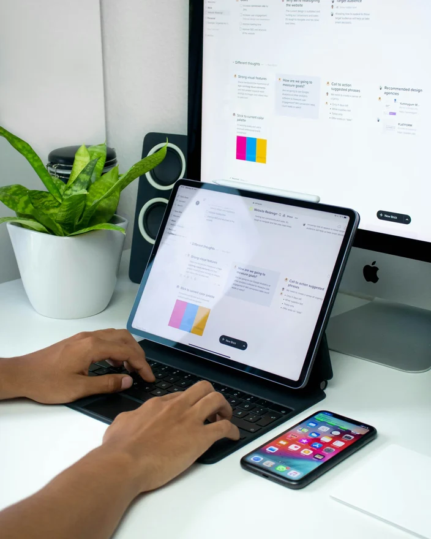

Marché et public cible
J’analyse le secteur, les besoins des clients et les évolutions du marché.

Comprenez votre marché avant de lancer une offre ou de vous développer à l’international.
Je définis avec vous la question à étudier et le périmètre de la recherche. Vous obtenez des éléments pour décider comment présenter votre offre et à quels clients vous adresser.

J’analyse le secteur, les besoins des clients et les évolutions du marché.
Je compare les offres, les prix publics et les messages des concurrents.
Vous recevez les conclusions, les sources consultées et des recommandations adaptées à votre projet.
Entrepreneurs qui testent une idée, petites entreprises qui lancent une offre et entreprises qui envisagent de se développer à l’international.
Un rapport personnalisé sur le marché, les clients et la concurrence, avec les sources, les conclusions et des recommandations pour vos prochaines décisions.
L’étude s’appuie principalement sur des sources secondaires et des données disponibles. Les enquêtes, entretiens et autres travaux de terrain font l’objet d’un périmètre et d’un devis spécifiques.
Sur devis
Par projet
J’analyse le marché et les concurrents. Le devis dépend du périmètre et du niveau d’analyse souhaité.
Demander un devis